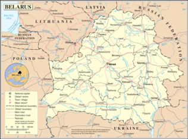
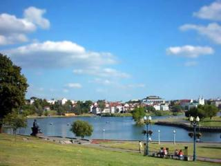

Belarus is the place I've lived the most amount of years so far. Whole 10 years!
I graduated from high school there, enjoyed 5 years of student life (it takes 5
years to get a Bachelor's degree in Belarus). I met my husband there too. So it's
been great 10 years.
Belarus makes a conflicting impression on people. On one hand you have clean and neat
cities and towns, well dressed and educated people. But on the other hand authoritarian
government, a lot of bureaucracy and outdated technologies. But people are so hospitable
and kind in Belarus. They all look after each other.

There is plenty of sightseeing to do in Minsk, the capital, as well as in other major
cities and countryside. But due to the massive bombings during the Second World War
most of the old architecture was destroyed. So there is no large tourist sights where you
could spend the whole day. You'd have to travel from place to place within the region
to be able to see a couple of old castles or churches.
For an experienced traveler Minsk may appear plain with its Stalinist buildings taking over
the whole city. But the city is full of life and there are plenty of things to do. There are
a couple of good restaurants downtown that offer local cuisine. There are amusement parks
with rides for kids (the biggest ones are
Gorky Park
and
Chelyuskinites Park
).